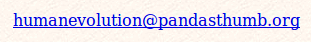

Fósiles de homínidos: Información de contacto
First, if you're planning to ask one of these Frequently Asked Questions, click on it to find the answer:- ¿Por qué has escrito estas páginas?
- ¿Por qué refutar los argumentos creacionistas sobre la evolución humana?
- ¿Harás mi tarea por mí?
- ¿Puedes identificar este cráneo/fósil/huella que he encontrado?
- ¿Cuáles son tus cualificaciones?
- ¿Conoces la dirección de correo electrónico de Richard Leakey?
- ¿Hay una copia de esa imagen del "Progreso de la Marcha" en la web?
- Si evolucionamos de los simios, ¿por qué todavía hay simios hoy?
- ¿Por qué no debates con Kent Hovind y/o reclamas su recompensa de $250,000 por evidencia de la evolución?
- ¿Por qué no aceptas el desafío de Walter Brown a un debate escrito?
Me gusta recibir comentarios de personas que han encontrado el sitio agradable o útil, e incluso de aquellas que no lo han hecho. Si envía comentarios, asumiré que está bien que los publique en mi página de comentarios a menos que me indique lo contrario. Si tiene una preferencia sobre qué parte de su nombre desea que utilice, dígamelo.
No tengo, sin embargo, tiempo para un largo diálogo conversacional sobre el creacionismo y la evolución, especialmente en temas no relacionados con la evolución humana. Encontrarás a mucha gente dispuesta a discutir estos temas en el grupo de noticias talk.origins, o en una serie de foros de discusión dedicados al debate sobre el creacionismo/evolución. No me malinterpretes; me gusta recibir correos, pero simplemente no tengo mucho tiempo para responder a ellos. No te ofendas si no respondo; a veces me toma mucho tiempo responder y ocasionalmente los mensajes simplemente se pierden en el desorden; envíame un correo electrónico nuevamente con un recordatorio si es importante para ti y haré todo lo posible por responderte.
Si, después de todo eso, aún desea enviarme un correo electrónico, mi dirección es

(no enlace proporcionado, para frustrar a los spammers; tendrás que escribirlo en tu programa de correo electrónico)
Durante algunos meses a principios de 2009, estaba utilizando una dirección de correo electrónico diferente que dejó de funcionar, por lo que si enviaba correo electrónico en ese momento, probablemente no lo recibí. Mis disculpas, y ahora los correos electrónicos están llegando correctamente.
Esta página forma parte del FAQ sobre homínidos fósiles en el Archivo talk.origins.
Página de inicio |
Especies |
Fósiles |
Creacionismo |
Lectura |
Referencias
Ilustraciones |
Novedades |
Comentarios |
Búsqueda |
Enlaces |
Ficción
http://www.talkorigins.org/faqs/homs/contact.html, 30/06/2008
Copyright © Jim Foley
|| Envíame un correo electrónico